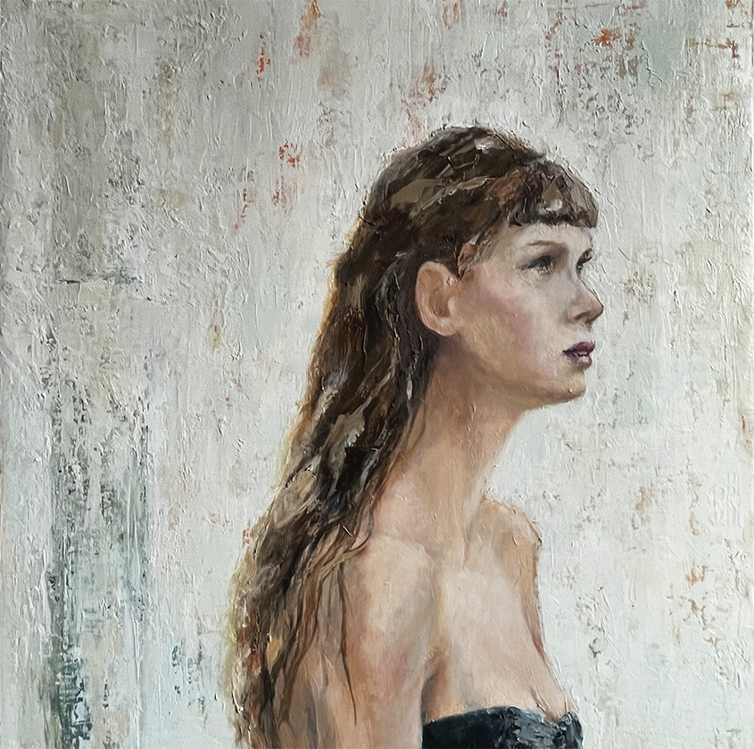

Zsófia Ötvös: People
People is a solo exhibition by Zsófia Ötvös presenting new paintings focused on figures in moments of pause and anticipation. On view throughout February 2026 at CSI Project Space & Gallery, 1912 N. Damen Avenue, Chicago.
Opening Reception: Saturday, February 7, 5–9 pm
Gallery Hours: Saturdays and Sundays, 4–8 pm, or by appointment
Zsofia Otvos zsofiaotvos@gmail.com
773.469.7201
Media images and full press materials: www.zsofiaotvos.com/press